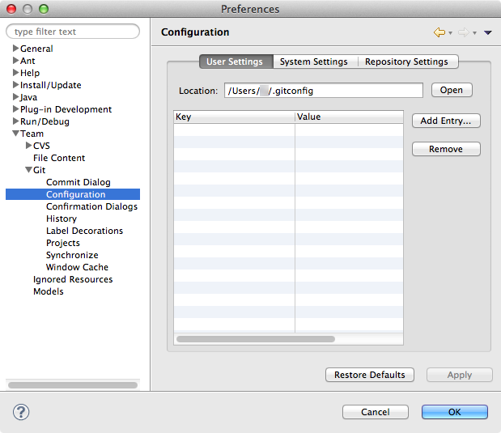
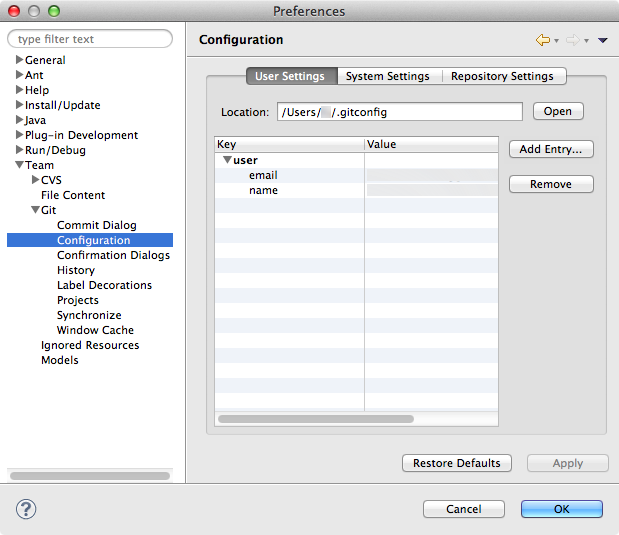

Step 5: Set Your Identity for Git Submission Records
Git maintains information on the identity of the author of each submission to the central repository. In order to ensure consistency of repository records, please follow the steps below.
Set Your Identity
- From the Eclipse menu choose Preferences…
- Navigate to Team/Git/Configuration. To the right of the Key/Value pane, click on Add Entry….

- In the Key field, type user.name and in the Value field, type your name. Click OK.
- From the Configuration pane, click Add Entry… again.
- In the Key field, type user.email and in the Value field, type your email address. Click OK.

- Click Apply, then OK.